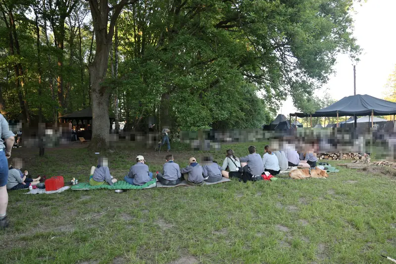
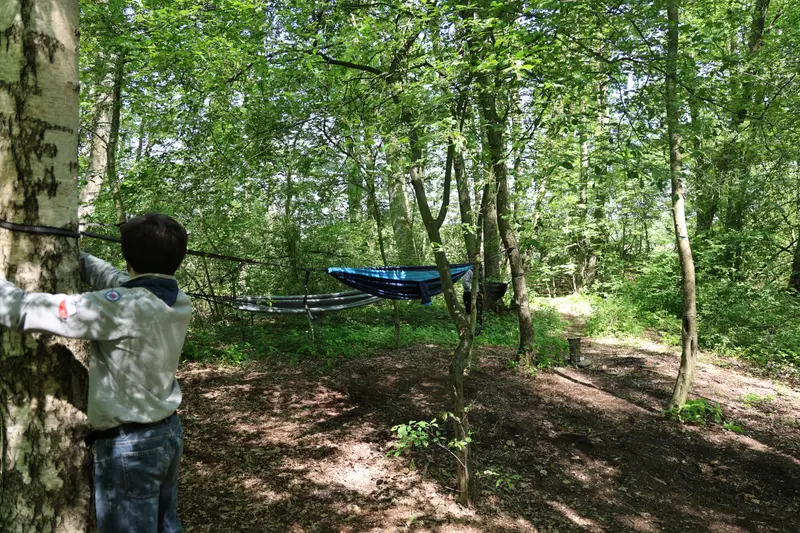
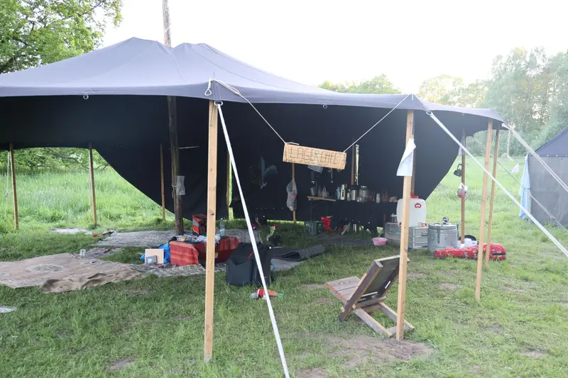
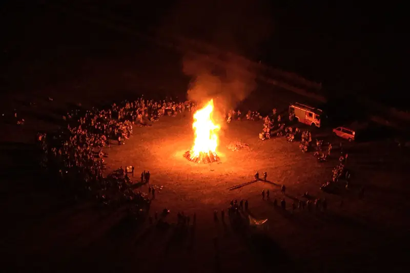

Wölflinge
Die Jüngsten treffen sich in der Meute. Angelehnt an Kiplings Dschungelbuch wird gespielt, gebastelt und gesungen – und dabei Rücksicht und Zusammenhalt gelernt. Erkennungszeichen: grünes Halstuch und Wolfskopf.
Mitmachen
Bei uns sind alle willkommen – unabhängig von Herkunft, Geschlecht oder Konfession. Hier erfährst du, wie Pfadfinden bei uns funktioniert.
Altersstufen
Die Jüngsten treffen sich in der Meute. Angelehnt an Kiplings Dschungelbuch wird gespielt, gebastelt und gesungen – und dabei Rücksicht und Zusammenhalt gelernt. Erkennungszeichen: grünes Halstuch und Wolfskopf.
In der Sippe, einer festen Gruppe Gleichaltriger, beginnt die eigentliche Pfadfinderarbeit: Fahrten, Lager und Proben. Jede:r bringt sich ein und übernimmt Verantwortung. Erkennungszeichen: blaues Halstuch und Kreuzlilie.
Wer älter wird, bleibt dabei: als Leiter:in einer Gruppe, in einer Jungmannschaft oder Roverrunde oder in einer Kreuzpfadfinderrunde. Viele bleiben dem Bund ein Leben lang verbunden.
Was wir machen

Einmal pro Woche trifft sich jede Gruppe, meist in den Räumen einer Kirchengemeinde. Es wird gespielt, gesungen, gebastelt und Pfadfindertechnik geübt – von Knoten bis Kartenkunde.

Mehrere Tage unterwegs zu Fuß, mit dem Rad oder im Kanu – nur mit dem, was man auf dem Rücken trägt. Übernachtet wird in der Kohte, unter freiem Himmel oder in Scheunen.

Vom Wochenendlager der Sippe bis zum Pfingstlager der Landesmark mit Hunderten Teilnehmenden: Wir bauen unsere schwarzen Zelte aus Holz und Seilen selbst auf, kochen am Feuer und feiern Gottesdienst unter freiem Himmel.

Lieder gehören bei uns einfach dazu – in der Gruppenstunde, am Lagerfeuer und beim Singewettstreit. Die Landesmark hat sogar ein eigenes Lied.
So geht's los
Such dir auf der Gruppenseite eine Gruppe in deiner Nähe aus.
Schreib der Gruppe oder dem Gau eine kurze Nachricht. Wir melden uns mit Zeit und Ort der nächsten Gruppenstunde.
Komm ein paar Mal vorbei und schau, ob es dir gefällt. Erst dann entscheidest du, ob du Mitglied werden willst.
Häufige Fragen
Nein. Unsere Arbeit ist christlich geprägt, und Andachten oder Gottesdienste gehören auf Lagern dazu. Mitmachen kann aber jede:r – wir sind ökumenisch offen und freuen uns über alle, die Lust auf Gemeinschaft haben.
Die Gruppen erheben einen Mitgliedsbeitrag, über dessen Höhe die jeweilige Gruppe informiert. Für Fahrten und Lager kommen Teilnahmebeiträge hinzu, die wir so niedrig wie möglich halten. Sprich die Gruppe ruhig an, wenn das Geld knapp ist.
Zum Schnuppern reicht wetterfeste Kleidung, mit der man auch mal dreckig werden darf. Kluft (Pfadfinderhemd) und Halstuch kommen später, wenn man Mitglied geworden ist.
Unsere Gruppen werden von ehrenamtlichen, geschulten Leiter:innen geführt, die selbst bei uns groß geworden sind. Dafür besuchen sie verpflichtende Führer:innenkurse, die auch die Kriterien der Juleica erfüllen, sowie Erste-Hilfe-Kurse.
Der Schutz der uns anvertrauten Kinder und Jugendlichen hat für uns oberste Priorität. Die CPD hat ein Schutzkonzept und Verhaltensgrundsätze, alle Verantwortlichen besuchen eine verpflichtende Präventionsschulung, und es gibt eigene Präventionsbeauftragte als Ansprechpersonen. Mehr dazu bei der CPD
Melde dich trotzdem bei uns. Vielleicht gibt es eine Gruppe in erreichbarer Entfernung – oder du hast Lust, mit uns etwas Neues aufzubauen: So funktioniert Siedeln.
Siedeln
Bei uns heißt das Siedeln: Eine neue Pfadfindergruppe entsteht – oft angestoßen von einer Kirchengemeinde, von Eltern oder von ehemaligen Pfadfinder:innen, die am neuen Wohnort etwas aufbauen wollen. Dabei seid ihr nicht allein: Über unser Patensystem begleiten erfahrene Leute aus der Landesmark euch von Anfang an.
Mit Unterstützung eurer Pat:innen startet die erste Gruppenstunde. Ihr bekommt Hilfe bei Programm, Material und Räumen – und Kontakt zu Stämmen in der Nähe.
Die Gruppe wird größer, die Leitung besucht Schulungen der Landesmark und des Bundes, und ihr fahrt gemeinsam auf die ersten Lager.
Mit mehreren Sippen oder einer Meute und einer eigenen Stammesführung steht euer Stamm auf eigenen Füßen – fest verankert in Gau und Landesmark.
Such dir eine Gruppe in deiner Nähe und komm vorbei.